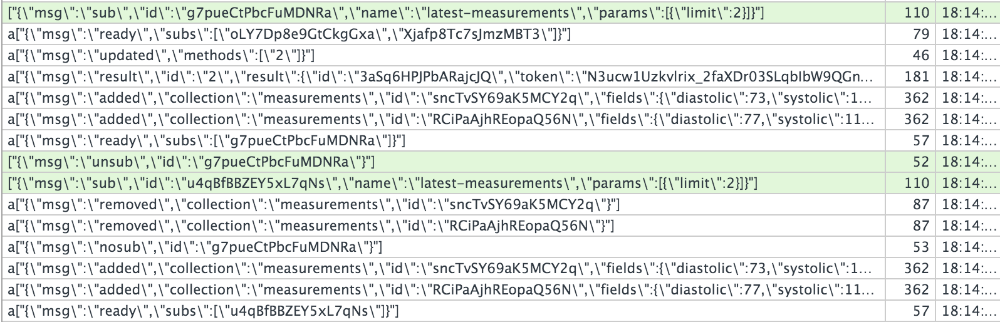
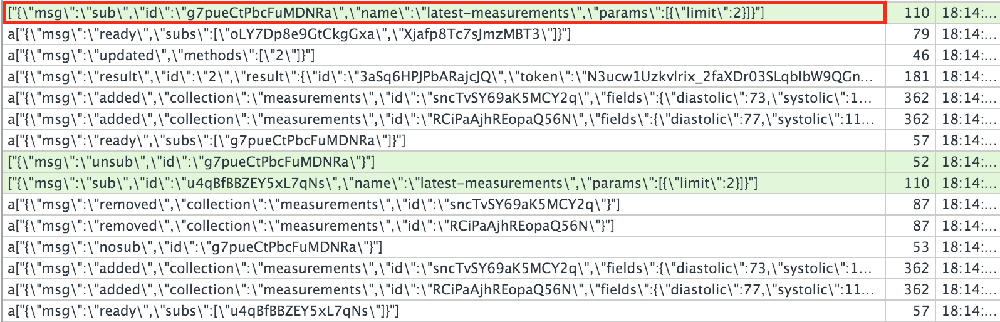
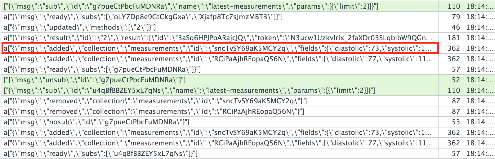
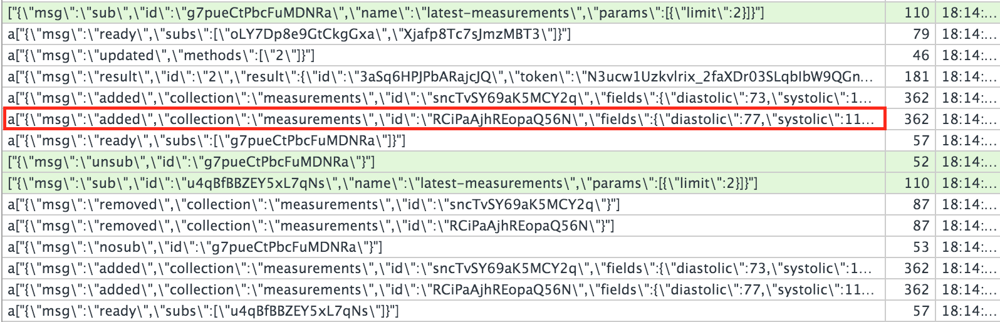
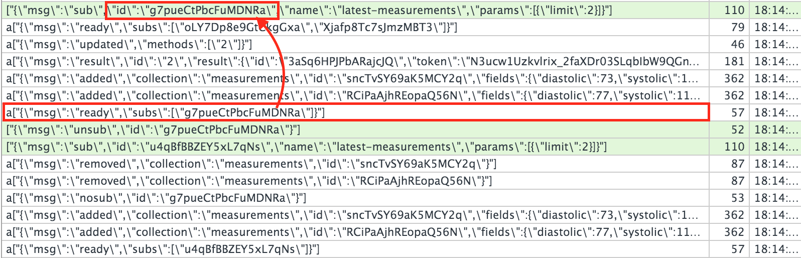
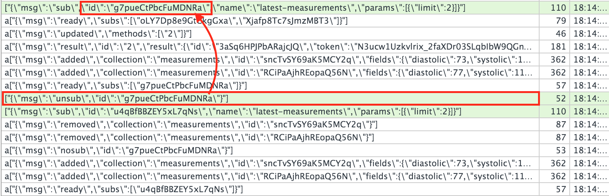
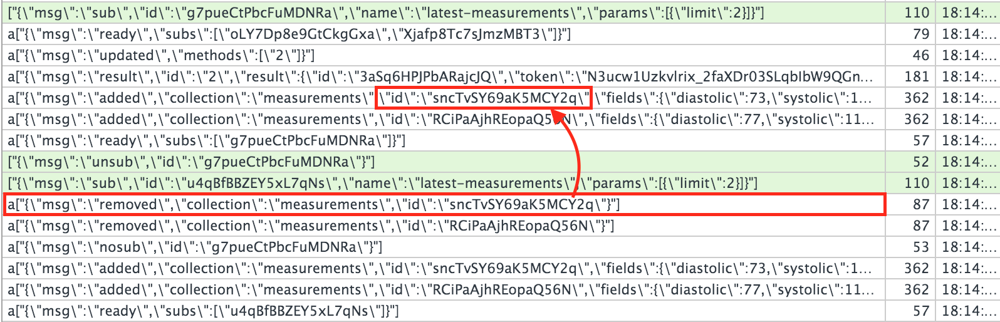
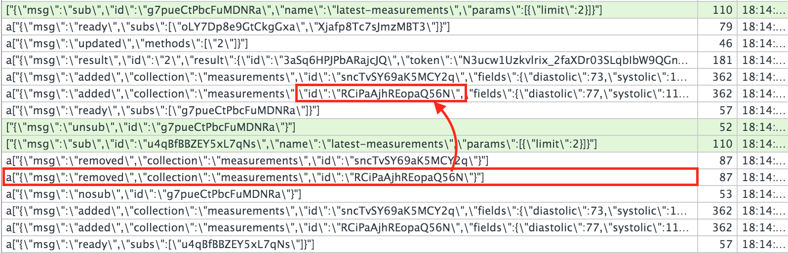
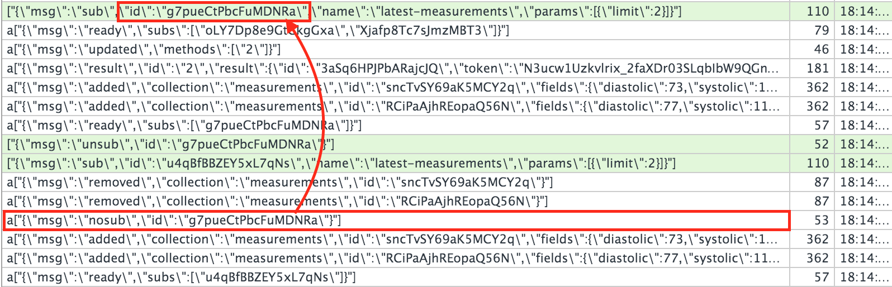

发配数据
send data under control in meteor
周鸿峰
周鸿峰
Jonathan Zhou
iHealth战略合作部
技术总监
目录
速览七理念
几个基本概念
什么是Pub/Sub
Pub实现--使用cursor
Sub实现
Subscription生命周期
Pub实现--使用API
Pub/Sub的代价
Pub粒度的抉择
实例
速览七理念
Data on the Wire
One Language
Database Everywhere
Latency Compensation
Full Stack Reactivity
Embrace the Ecosystem
Simplicity Equals Productivity
几个基本概念
server
client
MongoDB
miniMongo
collection
document
field
DDP
DDP: transfer in both directions
什么是Pub/Sub
Publication : a named API on the
server
that constructs a set of data to send to a client
Subscription : initialed on
client , connects to a publication, and receives that data
-- The Official Guide
## Pub实现--使用cursor
```javascript
// on the server
Meteor.publish('all-measurements', function() {
if(!this.userId){
return this.ready();
}
return Measurements.find({userId: this.userId});
});
```
## document结构
```javascript
{
"_id" : "gejtW6RFueN7HayBX",
"diastolic" : 104,
"systolic" : 177,
"heartRate" : 75,
"deviceAddress" : "8CDE521448F0",
"deviceModel" : "BP5",
"MDate" : ISODate("2015-05-08T16:04:02.665Z"),
"userId" : "3aSq6HPJPbARajcJQ",
"deviceType" : "BP",
"dataSouce" : "fake",
"createdAt" : ISODate("2016-03-04T15:47:23.521Z")
}
```
## Sub实现
```javascript
// on the client
Meteor.subscribe('all-measurements')
```
---
###### 刚才的Pub实现
```javascript
// on the server
Meteor.publish('all-measurements', function() {
if(!this.userId){
return this.ready();
}
return Measurements.find({userId: this.userId});
});
```
Sub时机
Router
Template/React component
### 带限制的publication
```javascript
Meteor.publish('latest-measurements', function(limit) {
if(!this.userId){
return this.ready();
}
return Measurements.find({userId: this.userId},
{sort:{MDate:-1},limit:limit});
});
```
-----
### 对应的subscribe
```javascript
Meteor.subscribe('latest-measurements',2)
```









Subscription生命周期总结
client通过DDP发送sub消息到server，包含pub的名字及参数
server运行pub的function
server根据返回值判断是否有可以复用的observer，如果有直接复用，没有建立新的observer
observer获取命中cursor的documents，通过added message全部传回client，存入minimongo
pub的function发送ready message到client
sub进入ready状态，pub的function退出
Subscription生命周期总结
observer持续 跟踪cursor的结果集
observer发现有新document命中后，通过added message传递给客户端
observer发现有document不再命中后，通过removed message通知客户端删除minimongo相应document
observer发现之前命中的document，field有变化，通过changed message传递给客户端
Subscription生命周期总结
client向server发送unsub message用于结束sub
observer退出
server向client发出removed message，用于清除应被删除的document
server向client发出nosub message，通知client该sub已退出
observer如何知道 客户端有什么document
server为每一个client建立一个mergebox
mergebox用于记录已经发往该client的所有document
added, changed, removed message是document在mergebox中进行比较后发给client
mergebox的比较只比较第一级field，也即两个不同的sub过滤了同一个field的不同子field，后sub的子field无法传给client
使用有嵌套的document时注意 此问题
observer如何复用
cursor的selector, filter完全一致则被认定复用
不同client sub到的observer也可以相互复用
observer如何持续 跟踪结果集
如果mongo使用了oplog，优先使用此操作日志进行跟踪
否则使用轮询
## Pub实现--使用API
```javascript
Meteor.publish('latest-measurements-by-api', function(filter) {
if(!this.userId){
return this.ready();
}
let self = this;
let subHandle = Measurements.find({userId: this.userId},
{sort:{MDate:-1},limit:filter.limit}).observeChanges({
added: function (id, fields) {
//first param below is the collection name in minimongo
self.added("measurements", id, fields);
},
changed: function(id, fields) {
self.changed("measurements", id, fields);
},
removed: function (id) {
self.removed("measurements", id);
}
});
self.ready();
self.onStop(function () {
subHandle.stop();
});
});
```
Pub/Sub的代价
observer的维护很贵
observer的创建和销毁很贵
document的传递很贵
Pub/Sub代价的应对
observer的维护很贵：尽可能复用
observer的创建和销毁很贵：SubsManager
document的传递很贵
尽可能少的传递document
尽可能多的过滤掉field
符合最小知识原则
提升安全性
Pub粒度的抉择
大粒度：降低observer数量，单体observer跟踪document数量多
小粒度：增加observer数量，单体observer跟踪document数量少
It depends!
需求
显示用户一年来的血压趋势
趋势图包含七个点，等距采样
产品经理画外音
我这刚测了个血压，怎么这个图没动？？？
产品经理画外音
你不是说meteor是reactive的吗
```javascript
Meteor.publish("sample-measurements-by-api", function(filter) {
check(filter,Object)
//datetime must be one of the list below
let datetime = filter.datetime
//num is the number of docs client want
let num = filter.num
check(datetime, String)
check(num, Number);
let threshold = num * 10;
if(!_.contains(["day","week","month","year","quarter","isoWeek","minute"]
, datetime)){
return this.ready();
}
let self = this;
let collName = "measurements";
let sampleMeasures = [];
let cond = {userId: this.userId}
let refreshSampleMeasures = function(){
_.each(sampleMeasures,function(m){
self.removed(collName, m._id)
});
sampleMeasures = lookForSample(self,_.clone(cond),
datetime,num,threshold);
_.each(sampleMeasures,function(m){
self.added(collName, m._id, m);
});
}
let newestMeasurementHandle = Measurements.find(cond,
{sort:{createdAt:-1},limit:1}).observeChanges({
added:function(id,fields){
refreshSampleMeasures();
},
changed:function(id,fields){
refreshSampleMeasures();
}
});
self.ready();
self.onStop(function() {
newestMeasurementHandle.stop();
});
})
```
总结
Pub/Sub的概念
Pub的两种实现方式
Subscription生命周期
Pub/Sub的策略选择
一个实例